# Your R code here8 Exercises (Chapter 9)
Create a scatterplot of
hwyvs.displwhere the points are pink filled in triangles.Why did the following code not result in a plot with blue points?
ggplot(mpg) + geom_point(aes(x = displ, y = hwy, color = "blue"))What does the
strokeaesthetic do? What shapes does it work with? (Hint: use?geom_point)What happens if you map an aesthetic to something other than a variable name, like
aes(color = displ < 5)? Note, you’ll also need to specify x and y.What geom would you use to draw a line chart? A boxplot? A histogram? An area chart?
Earlier in this chapter we used
show.legendwithout explaining it:ggplot(mpg, aes(x = displ, y = hwy)) + geom_smooth(aes(color = drv), show.legend = FALSE)What does
show.legend = FALSEdo here? What happens if you remove it? Why do you think we used it earlier?What does the
seargument togeom_smooth()do?Recreate the R code necessary to generate the following graphs. Note that wherever a categorical variable is used in the plot, it’s
drv.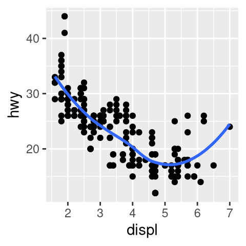
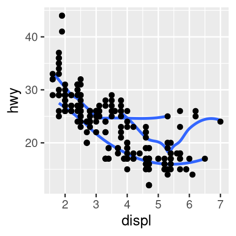
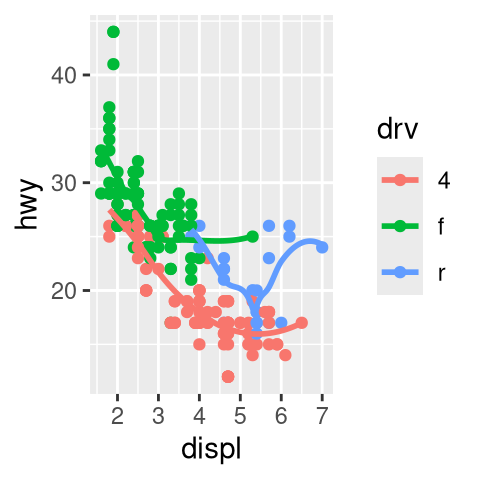
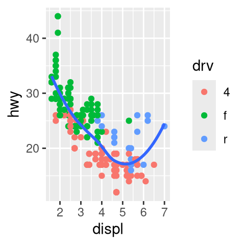
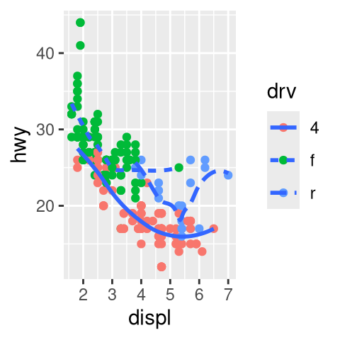
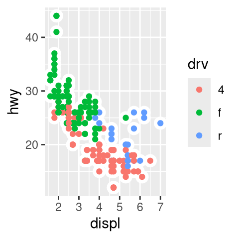
What happens if you facet on a continuous variable?
What do the empty cells in the plot above with
facet_grid(drv ~ cyl)mean? Run the following code. How do they relate to the resulting plot?ggplot(mpg) + geom_point(aes(x = drv, y = cyl))What plots does the following code make? What does
.do?ggplot(mpg) + geom_point(aes(x = displ, y = hwy)) + facet_grid(drv ~ .)ggplot(mpg) + geom_point(aes(x = displ, y = hwy)) + facet_grid(. ~ cyl)Take the first faceted plot in this section:
ggplot(mpg) + geom_point(aes(x = displ, y = hwy)) + facet_wrap(~ cyl, nrow = 2)What are the advantages to using faceting instead of the color aesthetic? What are the disadvantages? How might the balance change if you had a larger dataset?
Read
?facet_wrap. What doesnrowdo? What doesncoldo? What other options control the layout of the individual panels? Why doesn’tfacet_grid()havenrowandncolarguments?Which of the following plots makes it easier to compare engine size (
displ) across cars with different drive trains? What does this say about when to place a faceting variable across rows or columns?ggplot(mpg, aes(x = displ)) + geom_histogram() + facet_grid(drv ~ .)ggplot(mpg, aes(x = displ)) + geom_histogram() + facet_grid(. ~ drv)Recreate the following plot using
facet_wrap()instead offacet_grid(). How do the positions of the facet labels change?ggplot(mpg) + geom_point(aes(x = displ, y = hwy)) + facet_grid(drv ~ .)What is the default geom associated with
stat_summary()? How could you rewrite the previous plot to use that geom function instead of the stat function?ggplot(diamonds) + stat_summary( aes(x = cut, y = depth), fun.min = min, fun.max = max, fun = median )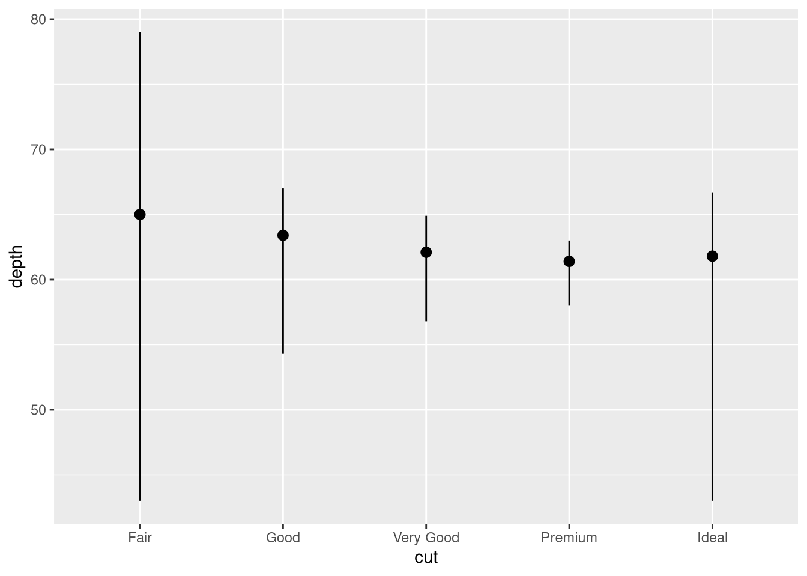
What does
geom_col()do? How is it different fromgeom_bar()?Most geoms and stats come in pairs that are almost always used in concert. Make a list of all the pairs. What do they have in common? (Hint: Read through the documentation.)
geom stat geom_bar()stat_count()geom_bin2d()stat_bin_2d()geom_boxplot()stat_boxplot()geom_contour_filled()stat_contour_filled()geom_contour()stat_contour()geom_count()stat_sum()geom_density_2d()stat_density_2d()geom_density()stat_density()geom_dotplot()stat_bindot()geom_function()stat_function()geom_sf()stat_sf()geom_sf()stat_sf()geom_smooth()stat_smooth()geom_violin()stat_ydensity()geom_hex()stat_bin_hex()geom_qq_line()stat_qq_line()geom_qq()stat_qq()geom_quantile()stat_quantile()What variables does
stat_smooth()compute? What arguments control its behavior?In our proportion bar chart, we needed to set
group = 1. Why? In other words, what is the problem with these two graphs?ggplot(diamonds, aes(x = cut, y = after_stat(prop))) + geom_bar()ggplot(diamonds, aes(x = cut, fill = color, y = after_stat(prop))) + geom_bar()# one variable ggplot(diamonds, aes(x = cut, y = after_stat(prop))) + geom_bar() ggplot(diamonds, aes(x = cut, y = after_stat(prop), group = 1)) + geom_bar() # two variables ggplot(diamonds, aes(x = cut, fill = color, y = after_stat(prop))) + geom_bar() ggplot(diamonds, aes(x = cut, fill = color, y = after_stat(prop), group = color)) + geom_bar()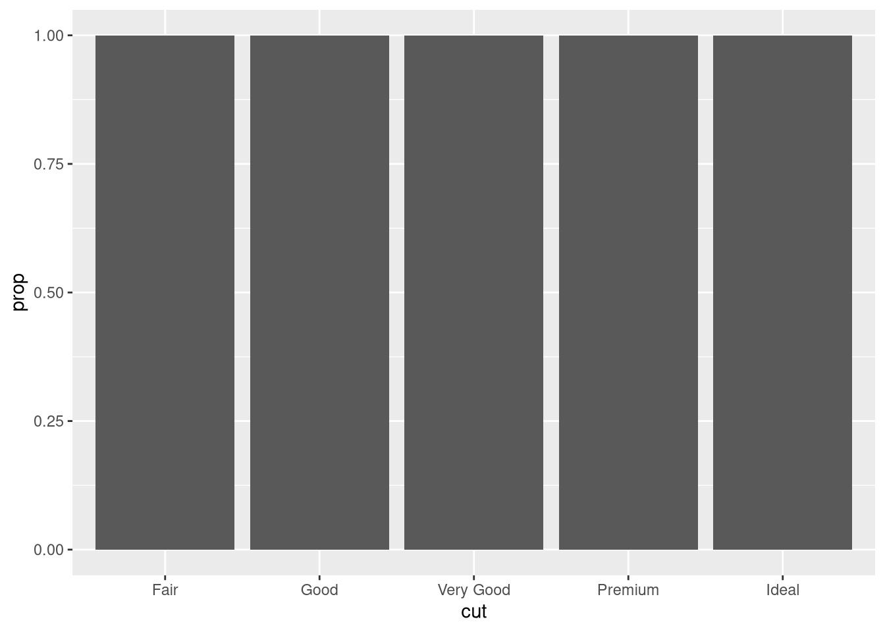
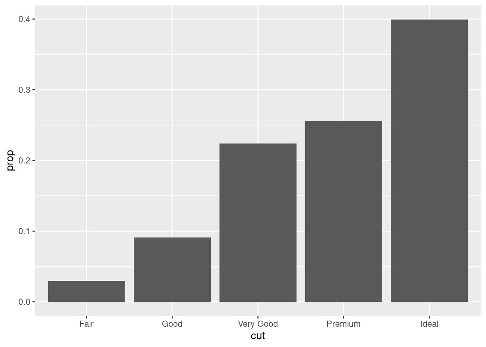
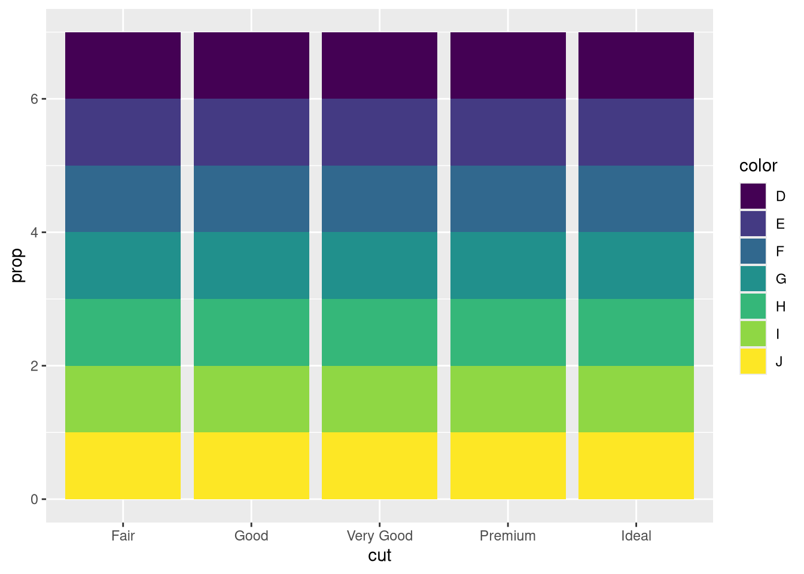
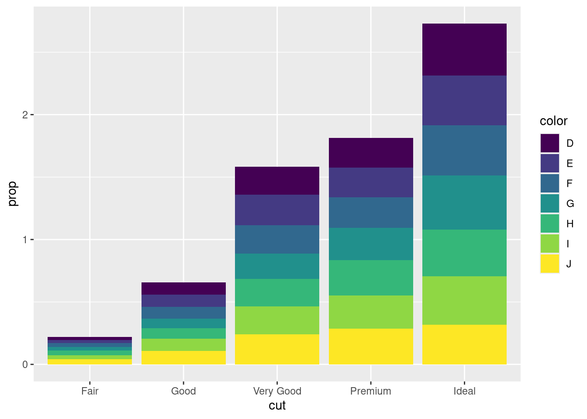
What is the problem with the following plot? How could you improve it?
ggplot(mpg, aes(x = cty, y = hwy)) + geom_point()ggplot(mpg, aes(x = cty, y = hwy)) + geom_point() ggplot(mpg, aes(x = cty, y = hwy)) + geom_jitter()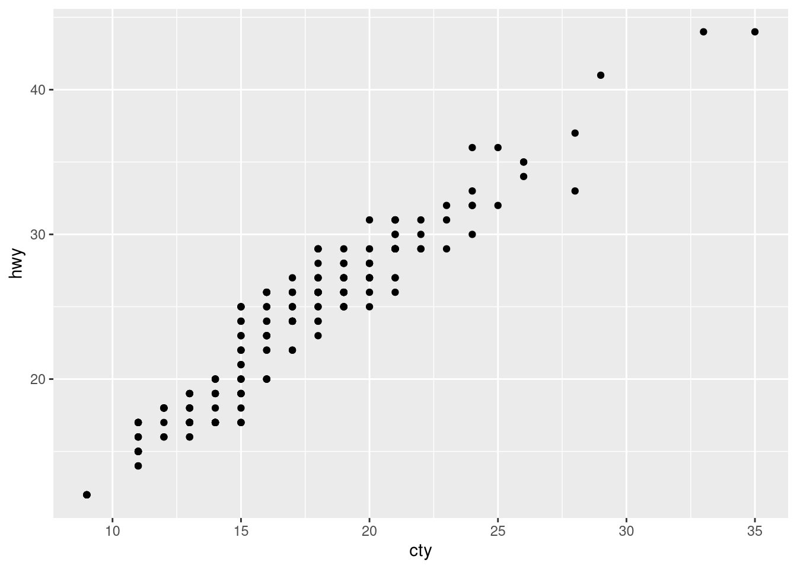
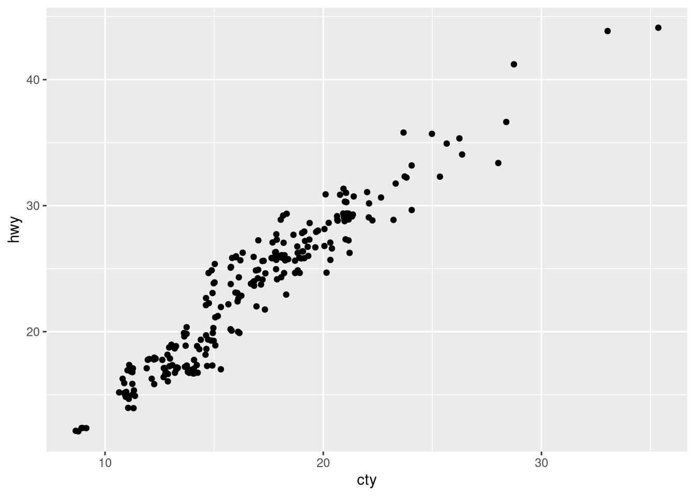
What, if anything, is the difference between the two plots? Why?
ggplot(mpg, aes(x = displ, y = hwy)) + geom_point()ggplot(mpg, aes(x = displ, y = hwy)) + geom_point(position = "identity")# Your R code hereWhat parameters to
geom_jitter()control the amount of jittering?set.seed(321) ggplot(mpg, aes(x = displ, y = hwy)) + geom_point(color = "gray") + geom_jitter(height = 1, width = 1) ggplot(mpg, aes(x = displ, y = hwy)) + geom_point(color = "gray") + geom_jitter(height = 1, width = 5) ggplot(mpg, aes(x = displ, y = hwy)) + geom_point(color = "gray") + geom_jitter(height = 5, width = 1)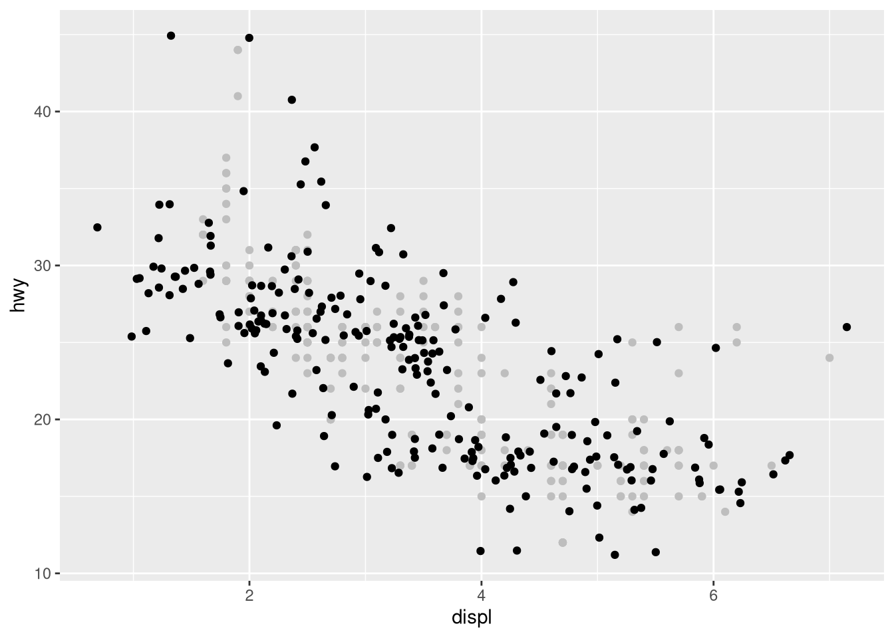
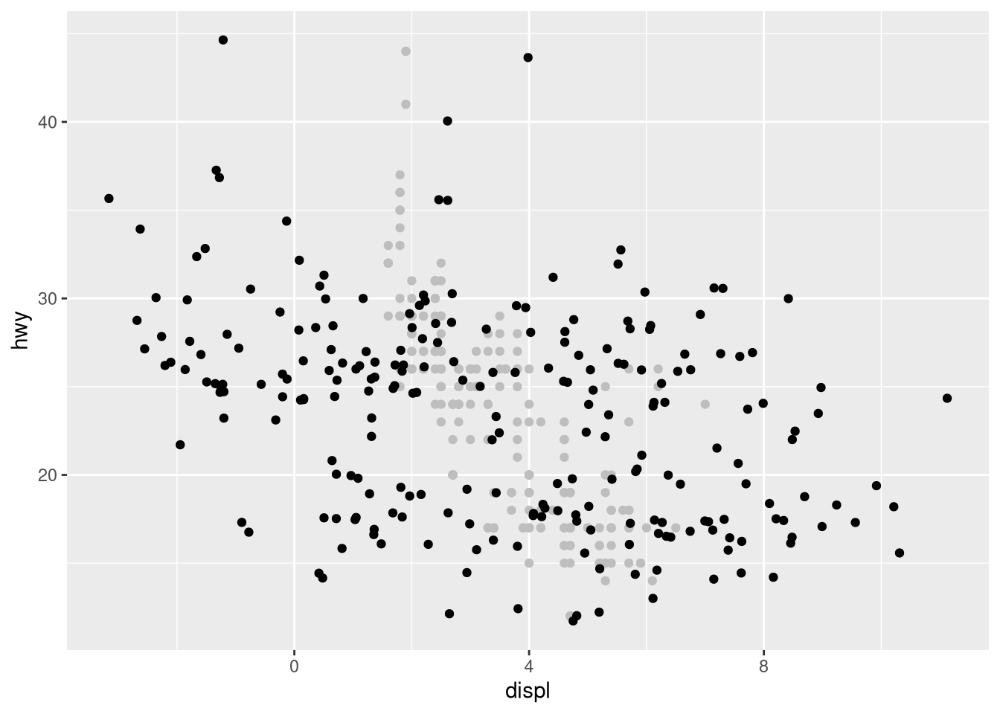
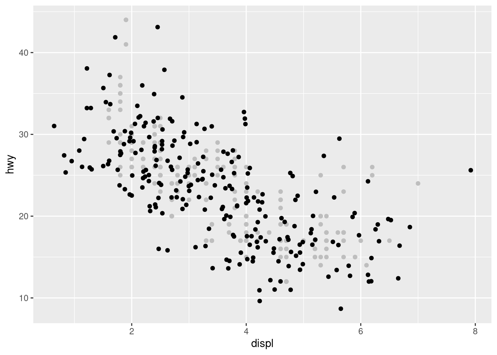
Compare and contrast
geom_jitter()withgeom_count().ggplot(mpg, aes(x = displ, y = hwy)) + geom_jitter() ggplot(mpg, aes(x = displ, y = hwy)) + geom_count()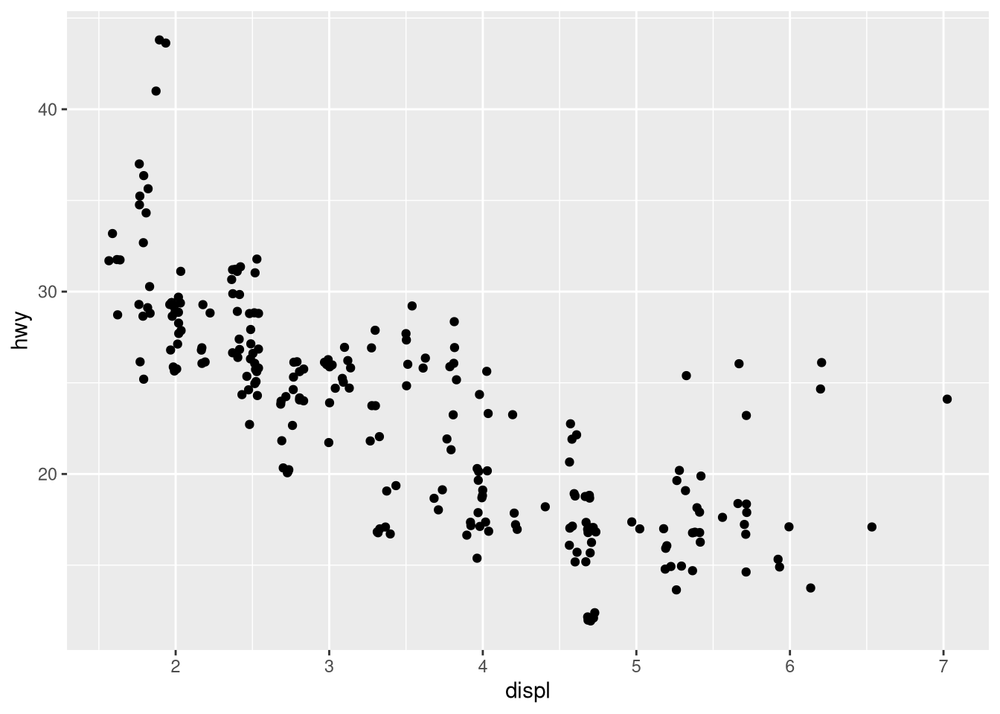
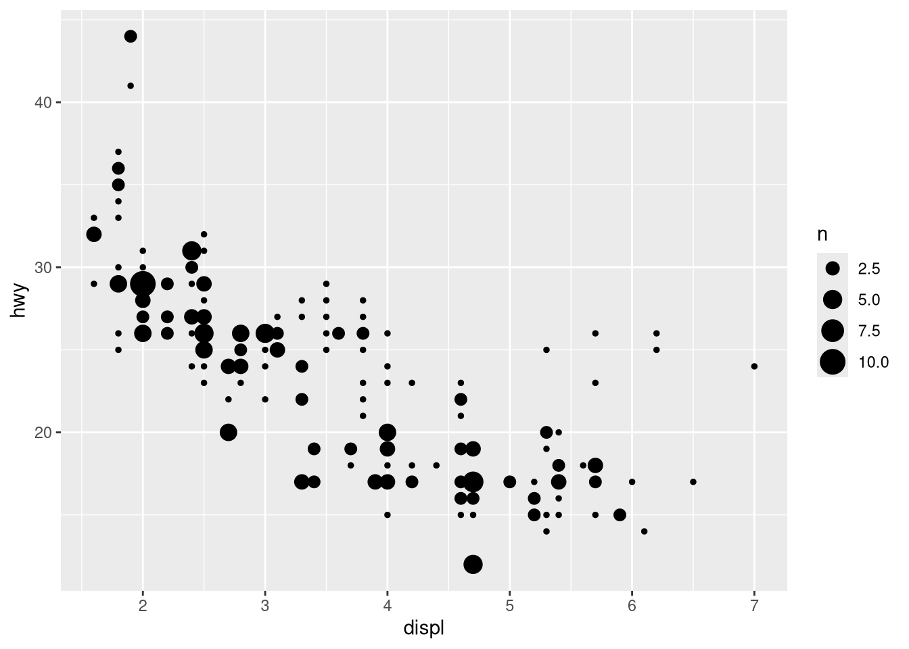
What’s the default position adjustment for
geom_boxplot()? Create a visualization of thempgdataset that demonstrates it.ggplot(mpg, aes(x = drv, y = displ)) + geom_boxplot() ggplot(mpg, aes(x = drv, y = displ)) + geom_boxplot(position = "dodge2")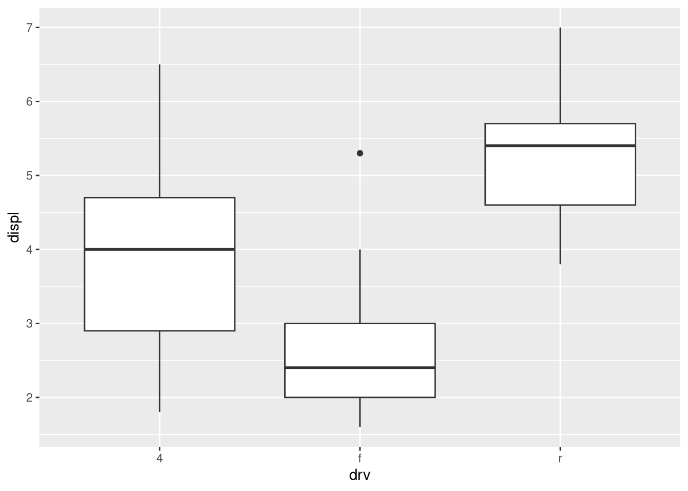

Turn a stacked bar chart into a pie chart using
coord_polar().# Your R code hereWhat’s the difference between
coord_quickmap()andcoord_map()?What does the following plot tell you about the relationship between city and highway mpg? Why is
coord_fixed()important? What doesgeom_abline()do?ggplot(data = mpg, mapping = aes(x = cty, y = hwy)) + geom_point() + geom_abline() + coord_fixed()